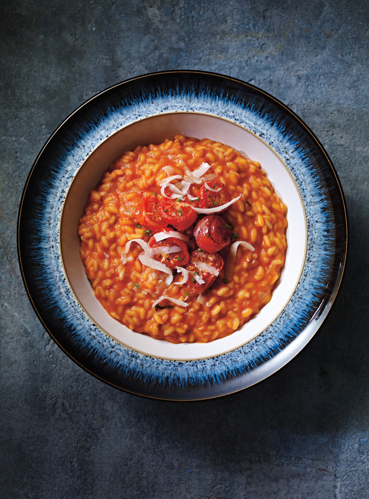

Tomato risotto
Rich and creamy tomato risotto topped with parmesan & fresh parsley
Ingredients
- olive oil
- 1 glove of garlic
- 2 shallots
- 1 onion
- 80 g higher-welfare chorizo
- ½ a bunch of fresh flat-leaf parsley,(15g)
- 750ml–1 litre of organic chicken or vegetable stock
- 1 x 400 g tin of quality plum tomatoes
- 300 g risotto rice
- 200 ml red wine
- 50 g Parmesan cheese , plus extra to serve
Method
- Peel and finely chop the shallots and garlic, finely chop the chorizo, then pick and finely chop the parsley leaves, finely chopping the stalks.
- Drizzle 2 tablespoons of olive oil into a wide, shallow pan. Add the parsley stalks, shallot, garlic and chorizo to the heated oil and cook over a medium-high heat for about 5 minutes, or until the shallot is softened and the chorizo is beginning to crisp.
- In another pan, heat the stock with the tinned tomatoes. Add the rice to the shallot mixture and stir to coat the grains. Cook over a high heat for 1 to 2 minutes, or until the grains have cracked and are slightly translucent at the tips, then pour in the red wine.
- Stir well and cook until almost all the wine has evaporated. Add the hot stock and tomato mixture, ladle by ladle, stirring well with each addition, and only adding more when the previous ladle is almost fully absorbed. You may not need all of the mixture, or you may need to top it up with a little water.
- The rice should be tender but with a little bite in the middle. When it’s cooked, add one last ladle of liquid.
- Finely grate the Parmesan, then add to the pan with some seasoning. Stir well, take off the heat and cover. Leave for 5 minutes or so before stirring again, tasting and adjusting the seasoning, if necessary.
- Serve topped with extra grated Parmesan and the chopped parsley leaves.
Enjoy!